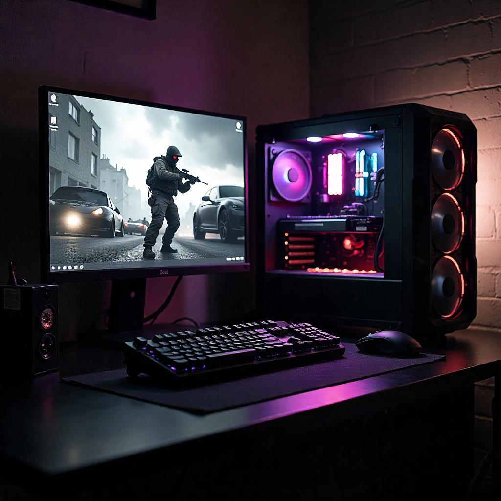
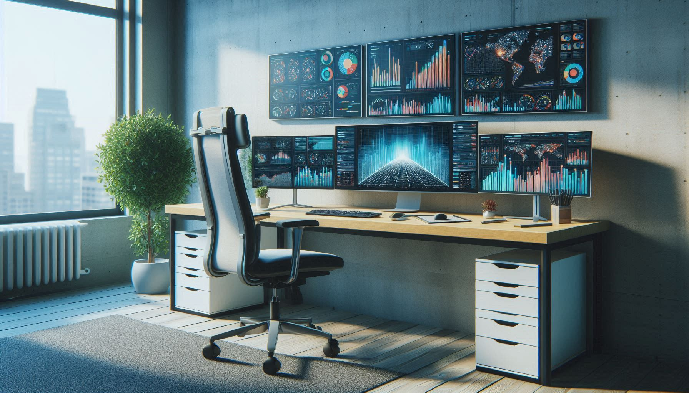
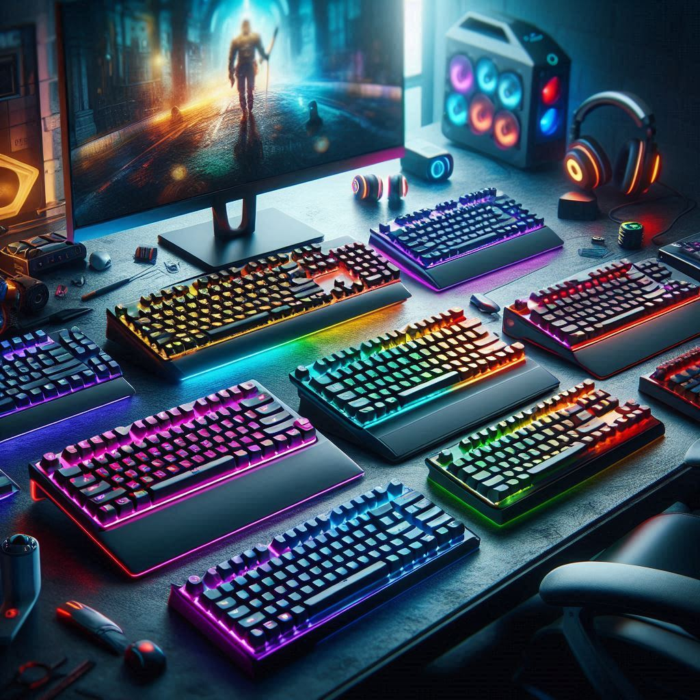
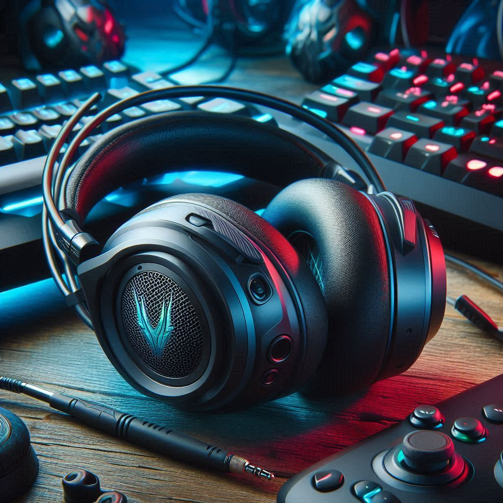

Bienvenidos a TecnoRecomendaciones
En un mundo donde la tecnología avanza a pasos agigantados, elegir el componente adecuado para tu ordenador puede ser una tarea complicada. En TecnoRecomendaciones queremos facilitarte esa decisión. Nuestra misión es ayudarte a encontrar los mejores periféricos y componentes de PC, con recomendaciones claras, análisis objetivos y enlaces directos a Amazon para que puedas comprar fácil y con confianza.
Aquí no vas a encontrar publicidad engañosa ni listas genéricas. Probamos, investigamos y comparamos decenas de productos para ofrecerte solo lo más destacado del mercado, adaptado a tus necesidades y presupuesto.
¿Qué clase de productos recomendamos?
- Tarjetas gráficas (GPU): ¿AMD o NVIDIA? Te mostramos qué modelo te conviene según tu tipo de uso: gaming, diseño, edición de video o multitarea.

- Monitores : Ya sea que busques resolución 4K, tasa de refresco de 144 Hz o paneles IPS para edición profesional, te guiamos en la mejor elección. 
- Teclados mecánicos y de membrana: Analizamos modelos para gaming, oficina o escritura, con énfasis en ergonomía, respuesta y durabilidad. 
- Ratones (mouses): Comparativas de ratones con y sin cable, sensores ópticos de alta precisión y diseños adaptados a cada tipo de mano y estilo de juego.
ratones.jpg)
- Auriculares: Sumérgete en el sonido con nuestras recomendaciones de auriculares con y sin micrófono, con énfasis en calidad de audio, comodidad y precio. 
Todos los enlaces te llevarán directamente a Amazon para que puedas comprar de forma segura y rápida. O haz click aquí para ir directamente a Amazon:
Aviso legal: Este sitio web participa en el Programa de Afiliados de Amazon, un programa de publicidad para afiliados diseñado para proporcionar un medio para que los sitios ganen comisiones publicitarias mediante la publicidad y promoción de productos de Amazon.